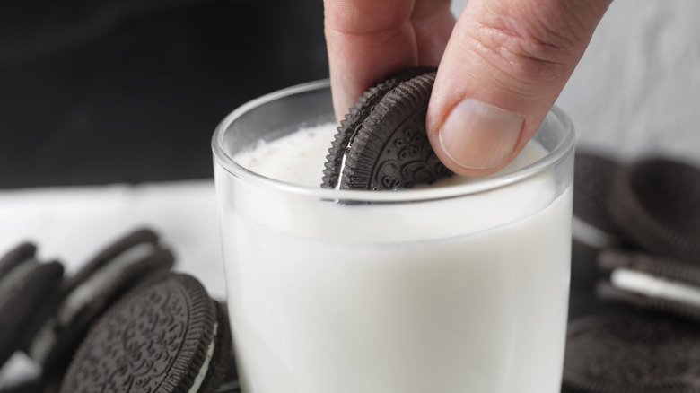

Milk & Oreos!

Description
Who doesn't love Oreos and Milk? This is a little guilty pleasure of mine.
I try not to have too many, but it's a classic that I can always rely on.
Ingredients
- Milk, any kind you like, although one of my favorite is Ithaca Cow milk. The cows are from New Jersey
and the milk can be a bit creamy with a light yellow coloration, but oh it's so rich.
- Oreos, whether it be double stuffed or whichever. Can't go wrong with the regular one.
Steps
- Just simply dip your Oreos into milk, letting it sometimes fall into the glass.
- Or just munch the cookie and chug the milk! :D